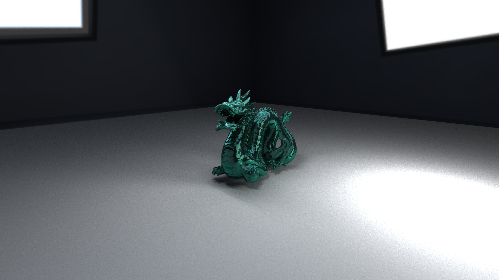
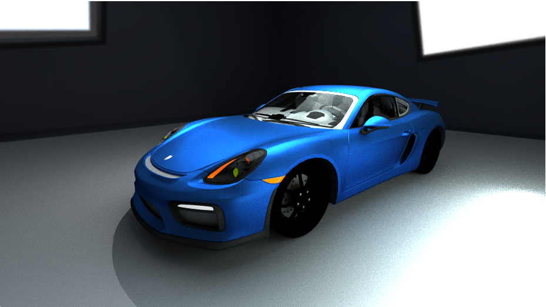
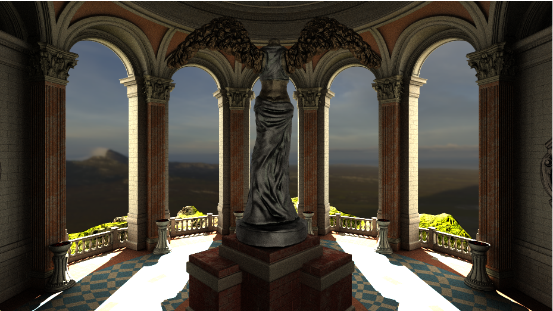

Gallery
Here are some of the renders created by my path tracer:  
The Idea
The main idea behind this project was to practice the theory, I learned in the computer graphics courses in university. Having implemented sever smaller real-time projects, I wanted to start a bigger project. I chose a GPU path tracer for this project. I started by learning the basics of Vulkan, but quickly decided to not spend the time with huge amounts of boilerplate code since I wanted to focus on the actual algorithms used for image generation. Here, the Unity game engine comes into play. It provides access to write Compute Shaders in HLSL and already has functionality to load objects, textures and create scenes.I started by implementing the basics of two tutorials:
- GPU Ray Tracing in Unity by David Kuri
- Ray Tracing in One Weekend by Peter Shirly